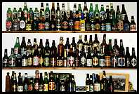
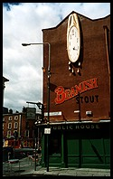

what? why?

When you get back from the pub, sometimes even a
Rough & Ready Rapid Recipe
is too much effort. So when you've got the beer munchies . . .
The Munchies
Fish-Finger Sandwich
You need: bread, fish-fingers, lettuce (a concession to healthy living).
- Microwave a few fish fingers for a few minutes.
- Cut a couple of slices/doorsteps of fresh bread.
- Arrange the bread, fish-fingers and lettuce sandwich-fashion.

Note: if you don't use a microwave the fish fingers won't be moist enough.
Cinnamon Toasted Cheese Sandwiches
You need: sliced bread, cheese, ground cinnamon.
- Make two rounds of cheese sandwiches.
- Sprinkle some cinnamon inside.
- Put the sandwiches in your 'thick-slice' toaster.
Note: a small amount of cayenne pepper is a good cinnamon alternative.
Tandoori Bacon Sandwich
You need: bacon, bread, Sharwood's Tandoori spice marinade or Tandoori Masala.
- Put some bacon, in small bits, in a frying pan.
- Cut a couple of slices/doorsteps of fresh bread.
- When the bacon is wet, add some of the spice powder.
- Put the bread in the toaster (optional).
- Stir the bacon for a bit, and then make a (toasted) sandwich with it.
If you don't like spicy food then Garam Masala is probably a better bet than the Tandoori stuff.
{kind=link}
{kind=link}
{kind=link}